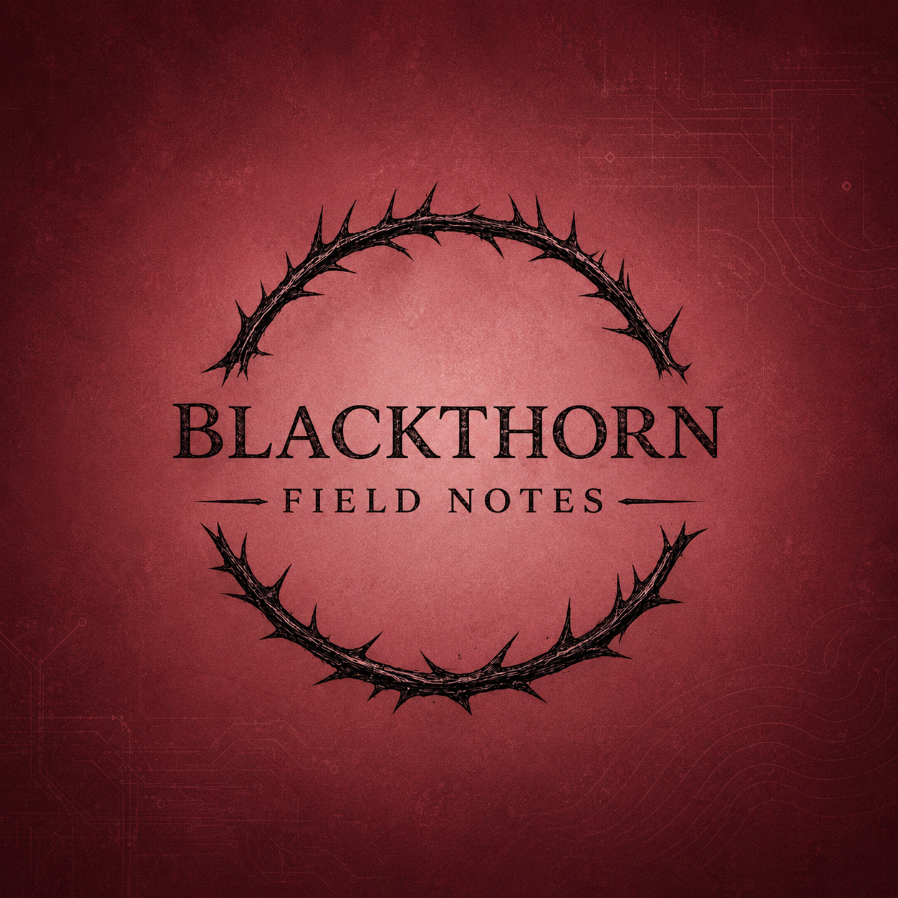
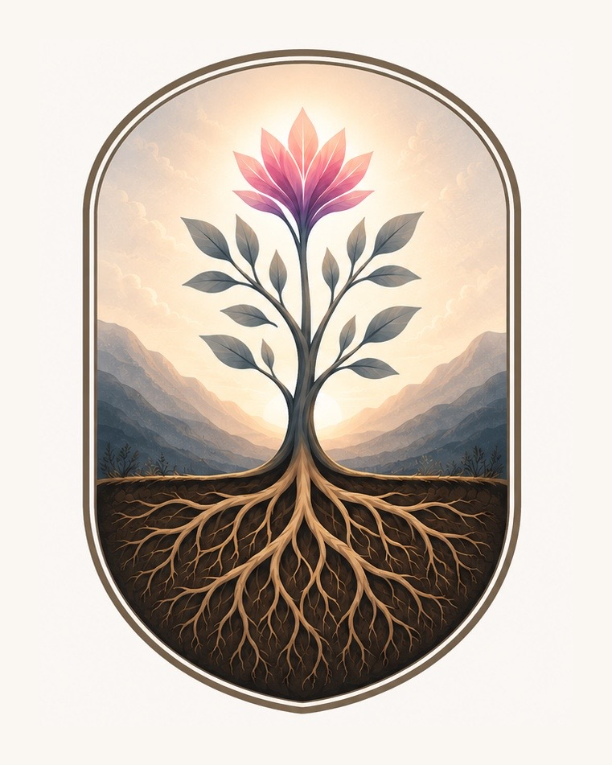

Blackthorn Field Notes
Essays, advocacy, disability, technology, relationships, systems critique, and survival writing rooted in lived experience and social care.
Visit site →Technology, strategy & publishing
Building better systems for people, organizations, and communities.
Blackthorn Enterprises brings together technology, business strategy, and independent publishing. Our work is grounded in accessibility, responsible innovation, and the belief that thoughtful systems and informed advocacy can make a meaningful difference for people and communities.
Purpose
Blackthorn Enterprises connects work across technology, organizational strategy, and independent publishing. Our aim is to build and improve systems that are accessible, effective, and accountable to the people they serve.
Across our ventures, technical expertise, strategic thinking, and clear communication work together to support organizations and communities. Human-centered principles guide how we operate, not just what we create.
The ecosystem

Essays, advocacy, disability, technology, relationships, systems critique, and survival writing rooted in lived experience and social care.
Visit site →Human-centered technology help, cybersecurity awareness, systems thinking, and practical support for people and organizations.
Visit site →
Strategy, systems, branding, workflows, accessibility-minded planning, and sustainable growth for purpose-driven projects.
Visit site →Mission
Blackthorn Enterprises is rooted in the belief that care can be structured, compassion can be practical, and empathy can become a system. We are here to help begin the shift toward a more positive, more accessible, more human-centered world.
Compassion should not be an afterthought. It should be designed into the way we build, communicate, support, and serve.
Our work should make technology, organizations, and information more accessible, understandable, and useful.
The work begins locally, but the intention is larger: to give back, reduce harm, and contribute to a better world wherever we can.
Contact
Explore our work in technology, organizational strategy, and independent publishing. Each venture brings a different perspective to building systems that better serve people.
Start exploring the ecosystem